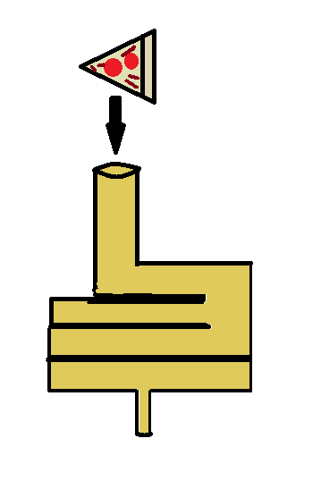
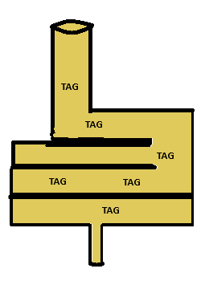
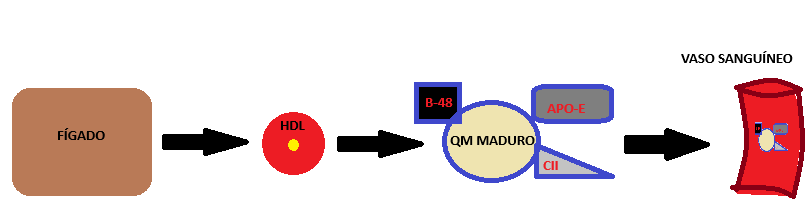
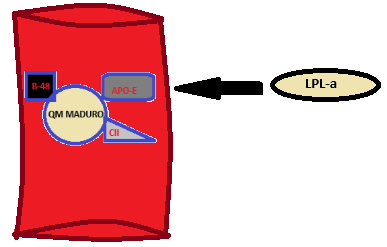
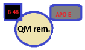

Lipídios
Liproteínas
A comida que ingerismo vai até o intestino
Em seguida a gordura é absorvida em forma de TAG
No enterocito, célula do intestino, os tag serão armazenado em forma de QM (QM nascente), a apo B-48 dá identidade ao QM
O HDL proveniente do fígado dará ao QM uma Apo-E que é reconhecida pelo fígado e Apo-CII que é reconhecida pela lpl para prosseguir com a degradação, formando o QM maduro na corrente sanguínea
As LPL vão quebrar os TAG do QM em glicerol e ácido graxo, o AG é liberado e pode ser absorvido pelo adipocito para sintetizar TAG
Após a quebra pela lpl o QM se encontra com uma pequena quanntidade de TAG, se tornando o QM remanescente
